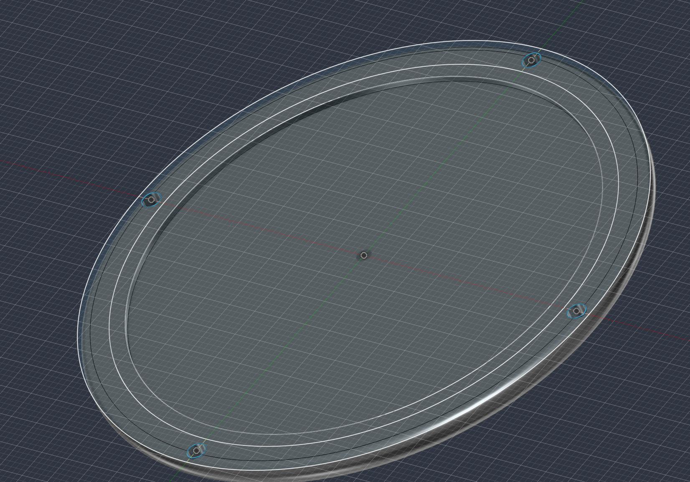
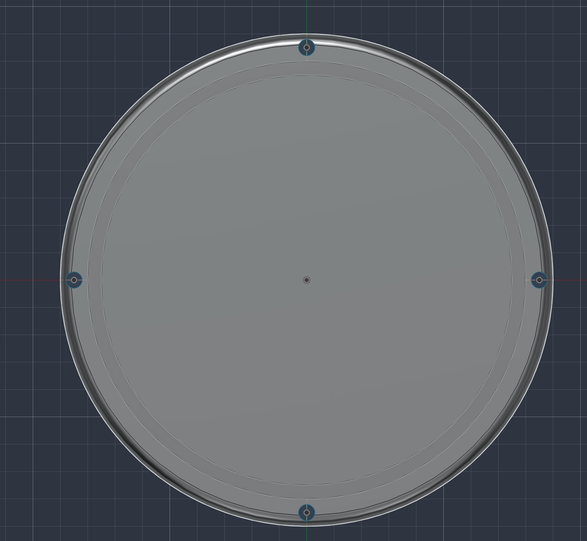

Week 7: Outputs
This week I made my attempt on the MVP. Even though it didn't go as well as intended, I am still really proud of this attempt.
At first I was thinking which type of sensors I should use to measure the quantity of water inside of a bottle, I eventually decided to use weight to measure it as it is the most straightforward and easy way.
And then I got to work with the parts that I need to 3D print
I created this for the top cover:

I created this for the bottom base:

These are the results for the 3D printing:


I identified that I could twerk the 3D model more, maybe adding some buttons to the base to add more functions like letting the microcontroller know you've refilled your bottle, or reset water amount.